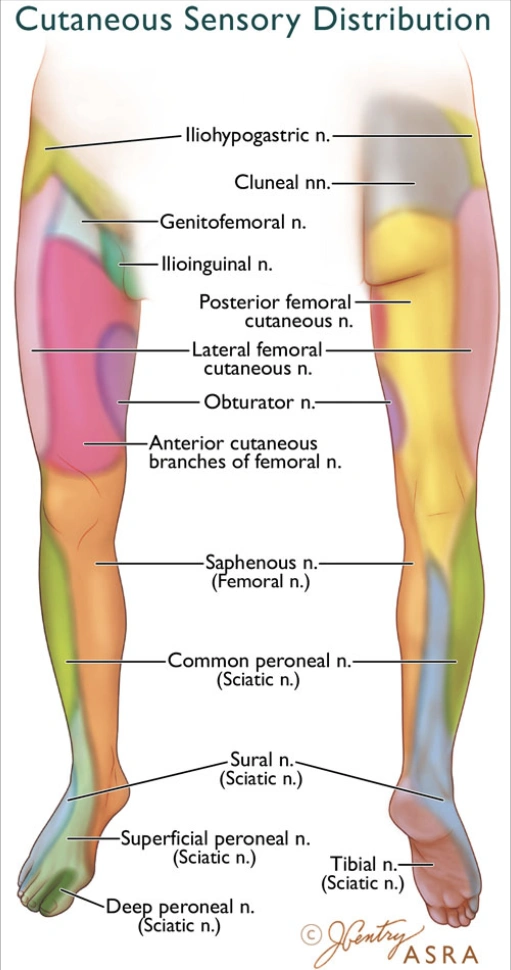
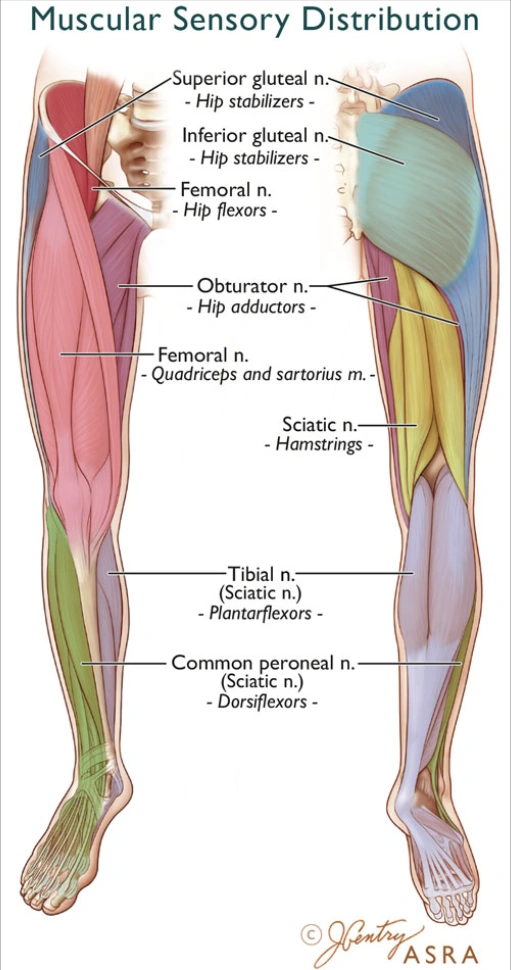
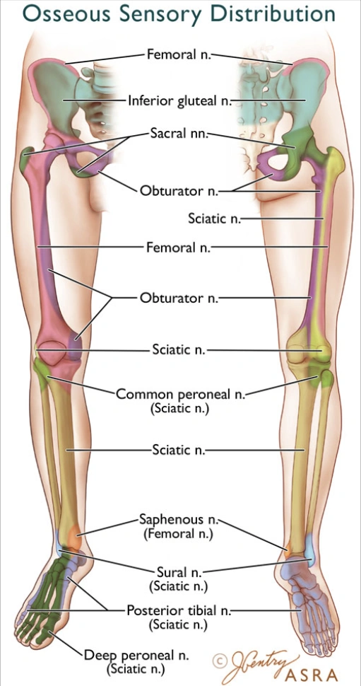
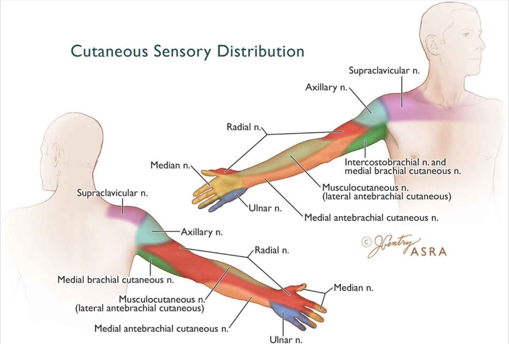
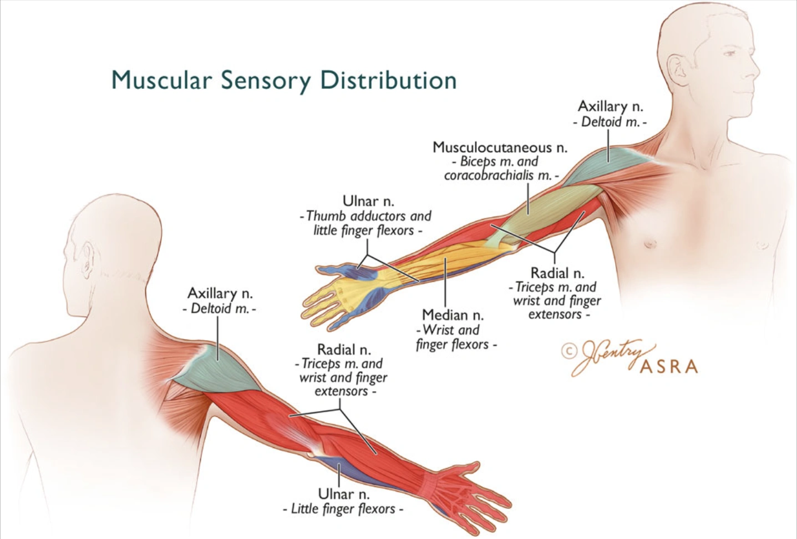
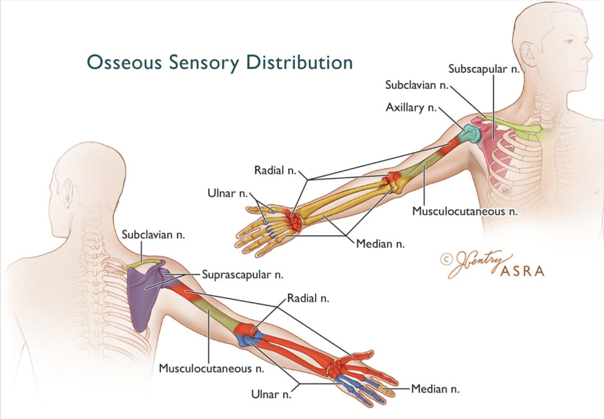
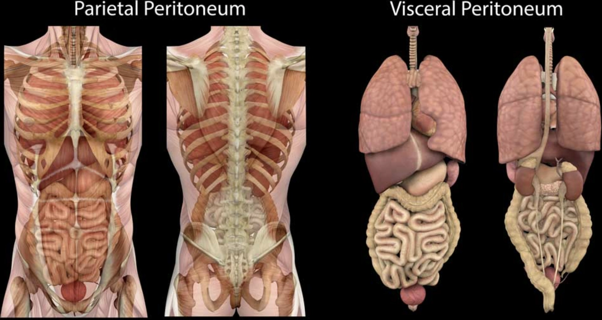

All Innervation Views — Full Review
Adductor_canal_(saphenous_nerve) (4 layers)
/Adductor_canal_(saphenous_nerve)_innervation/base.webp)
Deep_peroneal_nerve (6 layers)

Fascia_iliaca_(infrainguinal) (7 layers)
/Fascia_iliaca_(infrainguinal)_innervation/base.webp)
Fascia_iliaca_(suprainguinal) (7 layers)
/Fascia_iliaca_(suprainguinal)_innervation/base.webp)
Femoral_nerve (7 layers)

Femoral_triangle_apex (10 layers)

Inferior_lateral_geniculate_nerves (7 layers)

Inferior_medial_geniculate_nerves (7 layers)

Lateral_femoral_cutaneous_nerve (5 layers)

Lumbar_plexus_(shamrock) (7 layers)
/Lumbar_plexus_(shamrock)_innervation/base.webp)
Lumbar_plexus_(trident) (7 layers)
/Lumbar_plexus_(trident)_innervation/base.webp)
Obturator_nerve_(subpectineal) (4 layers)
/Obturator_nerve_(subpectineal)_innervation/base.webp)
Obturator_nerve_branches (4 layers)

Pericapsular_nerve_group_(PENG) (6 layers)
/Pericapsular_nerve_group_(PENG)_innervation/base.webp)
Sacral_plexus (8 layers)

Saphenous_nerve_(ankle) (6 layers)
/Saphenous_nerve_(ankle)_innervation/base.webp)
Sciatic_nerve_(anterior) (10 layers)
/Sciatic_nerve_(anterior)_innervation/base.webp)
Sciatic_nerve_(infragluteal) (11 layers)
/Sciatic_nerve_(infragluteal)_innervation/base.webp)
Sciatic_nerve_(popliteal_fossa) (5 layers)
/Sciatic_nerve_(popliteal_fossa)_innervation/base.webp)
Sciatic_nerve_(transgluteal) (10 layers)
/Sciatic_nerve_(transgluteal)_innervation/base.webp)
Superficial_peroneal_nerve (6 layers)

Superior_lateral_geniculate_nerves (7 layers)

Superior_medial_geniculate_nerves (7 layers)

Sural_nerve (6 layers)

Tibial_nerve_(ankle) (6 layers)
/Tibial_nerve_(ankle)_innervation/base.webp)
iPACK_(lateral) (6 layers)
/iPACK_(lateral)_innervation/base.webp)
iPACK_(supine) (8 layers)
/iPACK_(supine)_innervation/base.webp)
Paediatric_brachial_plexus_axillary (5 layers)

Paediatric_caudal (0 layers)

Paediatric_femoral_nerve (7 layers)

Paediatric_penile_nerves (2 layers)

Paediatric_quadratus_lumborum (3 layers)

Paediatric_rectus_sheath (5 layers)

Paediatric_sciatic_nerve_popliteal (5 layers)

ASRA_lower_limb_cutaneous (0 layers)

ASRA_lower_limb_muscular (0 layers)

ASRA_lower_limb_osseous (0 layers)

ASRA_upper_limb_cutaneous (0 layers)

ASRA_upper_limb_muscular (0 layers)

ASRA_upper_limb_osseous (0 layers)

Parietal_and_visceral_peritoneum (3 layers)

Anterior_quadratus_lumborum (6 layers)

Cervical_plexus_(intermediate) (1 layers)
/Cervical_plexus_(intermediate)_innervation/base.webp)
Deep_parasternal_intercostal_plane (2 layers)

Erector_spinae_plane (5 layers)

Ilioinguinal_&_iliohypogastric_nerves (6 layers)

Interpectoral_plane (5 layers)

Lateral_quadratus_lumborum (2 layers)

Midaxillary_TAP (6 layers)

Paravertebral_(sagittal) (5 layers)
/Paravertebral_(sagittal)_innervation/base.webp)
Paravertebral_(transverse) (5 layers)
/Paravertebral_(transverse)_innervation/base.webp)
Pectoserratus_and_interpectoral_planes (6 layers)

Rectus_sheath (5 layers)

Subcostal_TAP_(lower) (8 layers)
/Subcostal_TAP_(lower)_innervation/base.webp)
Subcostal_TAP_(upper) (6 layers)
/Subcostal_TAP_(upper)_innervation/base.webp)
Superficial_parasternal_intercostal_plane (2 layers)

Superficial_serratus_anterior_plane (6 layers)

Transversalis_fascia_plane (3 layers)

Axillary_brachial_plexus (5 layers)

Axillary_nerve (6 layers)

Infraclavicular_brachial_plexus_(coricoid)_&_(RAPTIR) (9 layers)
_&_(RAPTIR)/Infraclavicular_brachial_plexus_(coricoid)_&_(RAPTIR)_innervation/base.webp)
Infraclavicular_brachial_plexus_(costoclavicular) (9 layers)
/Infraclavicular_brachial_plexus_(costoclavicular)_innervation/base.webp)
Intercostobrachial_nerve (5 layers)

Interscalene_brachial_plexus (8 layers)

Lateral_cutaneous_nerve_of_forearm (4 layers)

Medial_cutaneous_nerve_of_forearm (4 layers)

Median_nerve_antecubital_fossa (5 layers)

Median_nerve_mid_arm (4 layers)

Median_nerve_mid_forearm (4 layers)

Posterior_cutaneous_nerve_of_forearm (4 layers)

Radial_nerve_antecubital_fossa (4 layers)

Radial_nerve_distal_arm (4 layers)

Radial_nerve_superficial_branch (5 layers)

Superior_trunk (8 layers)

Supraclavicular_brachial_plexus (9 layers)

Supraclavicular_nerves (3 layers)

Suprascapular_nerve_(anterior) (6 layers)
/Suprascapular_nerve_(anterior)_innervation/base.webp)
Suprascapular_nerve_(posterior) (6 layers)
/Suprascapular_nerve_(posterior)_innervation/base.webp)
Ulnar_nerve_mid_arm (4 layers)

Ulnar_nerve_mid_forearm (4 layers)

Total: 80 innervation views